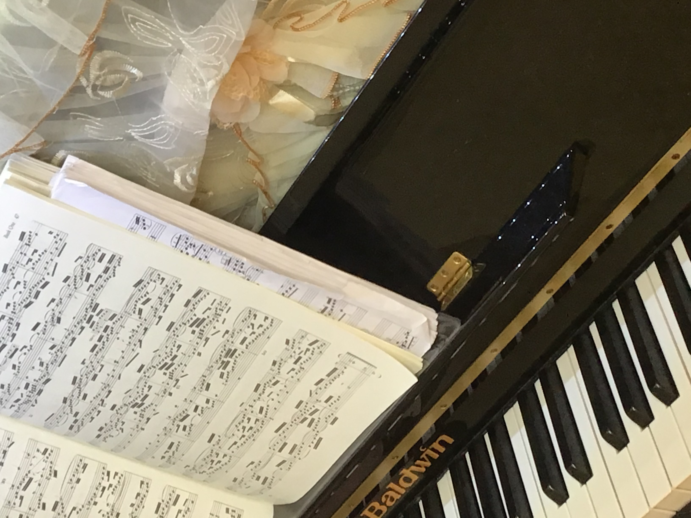
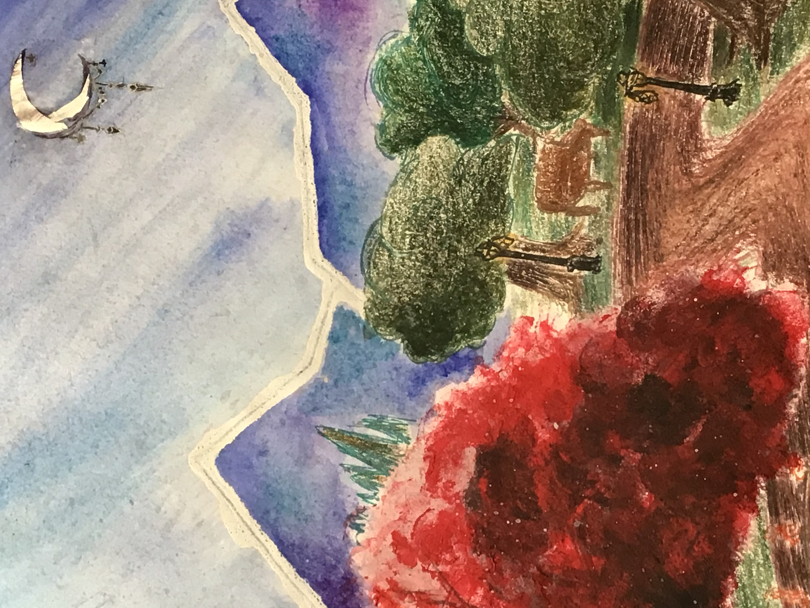
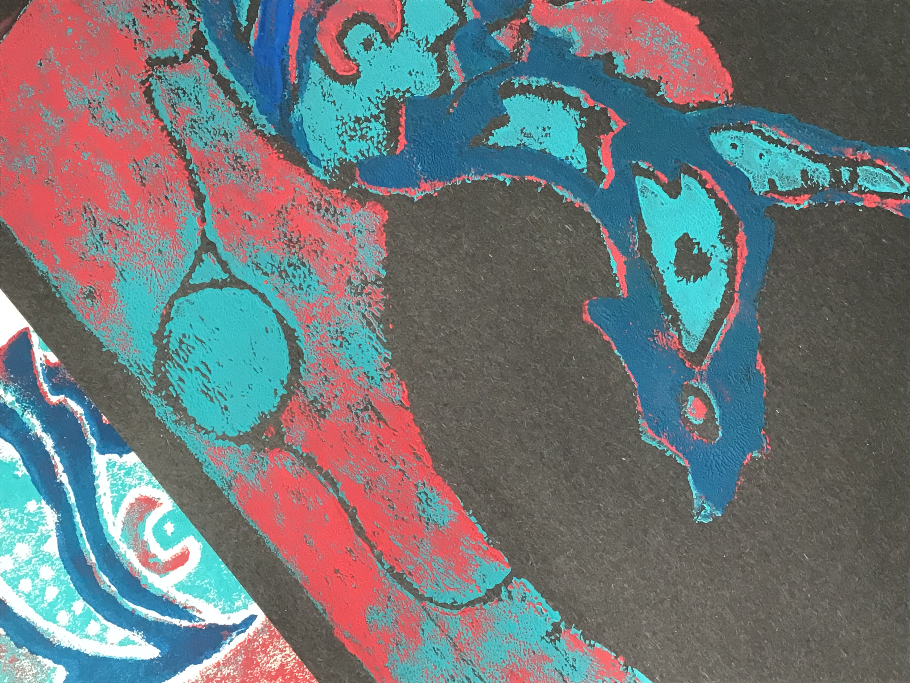
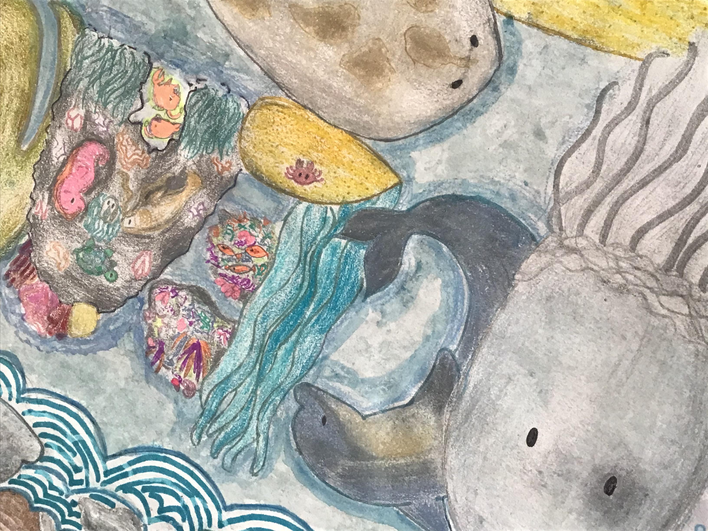
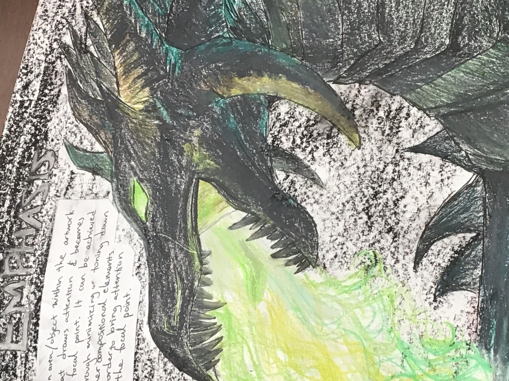
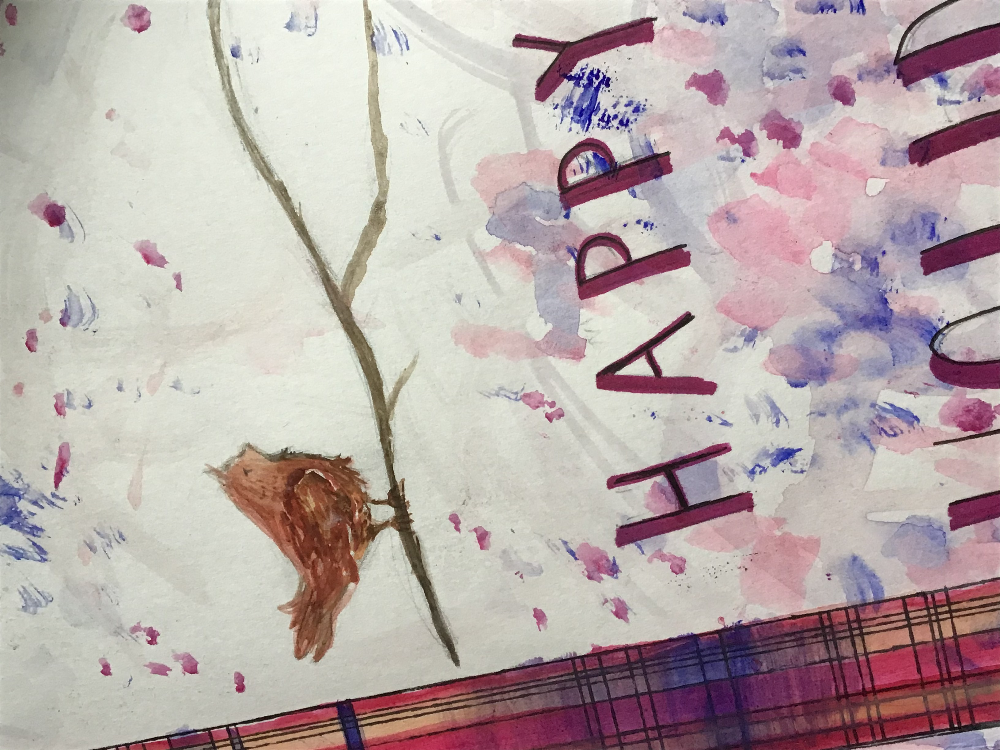

The hobbies page will introduce some of my hobbies, and a selected few of them will be explore in more
depth. It will also contain a general overview of other hobbies which will not be featured on this site.


Listening to Music
The mood of the music can either motivate me or be my companion when I'm feeling negative. Listening to
different melodies and harmonies also are a source of artistic inspiration for me, and it often prompts
me to think a lot about philosophical matters.
Piano
I first started piano when I was 6 years old, although my teacher was very weird. He taught me musical
concepts backwards, and seemed quite proud of it [ex. phrasing]. I switched teachers at the age of 7 and
restarted my musical education properly.
I enjoy playing piano a lot and it's become such a routinely thing that I feel weird if I don't practice enough
for a day. I have also learned theory and the like.
[ However, I dislike recitals that my piano teacher forces me into. ]
What I practice on >>
Art is great for generating a love for both learning and creativy by giving the creator a chance to explore
themselves. It also teaches risk taking and having an open mind because nothing is certain in art. Art also
improves attention, strengthens focus, and helps develop the entire brain [ although the creative side is
the right half of the brain]. The definition of art varies from person to person, but the most general and plain explanation
for what it is, is :
"The expression or application fo human creative skill and application,
typically in a visual form."
More Reasons Why Art is Great [click]
I enjoy drawing and other forms of art, because it helps my relieve stress and boost my creativity. I also doodle
on a regular basis.
| Collage |
|
|  |
 |
 |
 |
 |
| Cover of my Sketchbook |
Aboriginal Stamp Art
[school project] |
Ocean Word Art |
Emphasis [Principles of Design,
School Project] |
Holiday Card for Someone |
Reading is one of my biggest hobbies, and I read almost everyday (although I used to read more in middle/elementary school)
and most genres. I borrow most of my books from the toronto public library, and I love visiting the library because it
is literally book heaven. I also have a mini-library [quite a generous title] which is actually just a corner for my owned
books. Someday I wish to have my own library with many books in it.
Previous Memories/Experiences
- My mom started reading to me when I was 3 and I remember my mom telling me to not to listen to others and read
"one word in grade 1, two words in grade 2, etc"
- I used to only read non-fiction
- My first novel was Warrior Cats when I was 7
-
Grade 7 felt like a drought because I ran out of books to read and the TPL book transition took a really long time
It was an empty time period.
For example, some genres I really enjoy include
- Science Fiction
- Mystery & Crime
- Psychological
- Thrillers
- Any well-written non-fiction
I have no favourite author, although I'd read most of Agatha Christie's works along with a few other unnamed authors. My
choice of book usually depends on the blurb of the book and my interest in it [of course.]